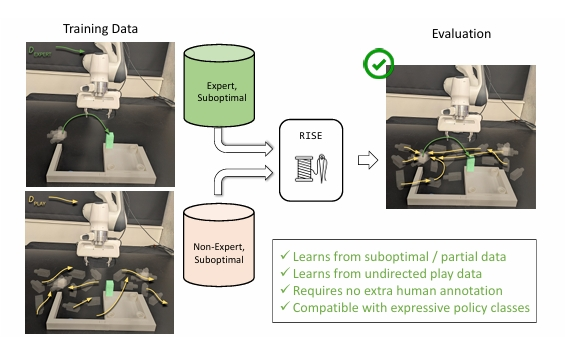
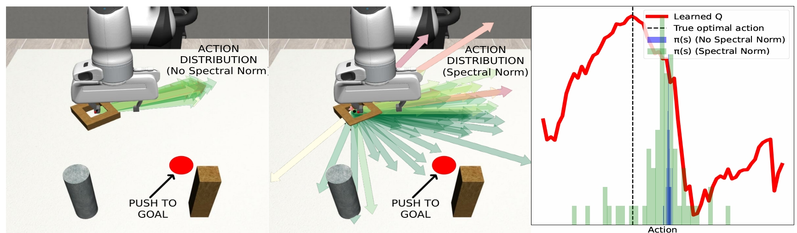

RISE

Using Non-Expert Data to Robustify Imitation
Learning via Offline Reinforcement Learning
Kevin Huang*,
Rosario Scalise*,
Cleah Winston,
Yunchu Zhang,
Rohan Baijal,
Ayush Agrawal,
Markus Grotz,
Bryon Boots,
Abhishek Gupta
(*:equal contribution)
University of Washington

Benjamin Burchfiel,
Hongkai Dai,
Masha Itkina,
Paarth Shah
Toyota Research Institute

RISE: Robust Imitation by Stiching from Experts demonstrates the following benefits.
Abstract.
Imitation learning has proven highly effective for training robots to
perform complex tasks from expert human demonstrations. However, it remains
limited by reliance on high-quality, task-specific data, restricting adaptability to
the diverse range of real-world object configurations and scenarios. In contrast,
non-expert data—such as play data, suboptimal demonstrations, or partial task
completions—can offer broader coverage and lower collection costs, but conven-
tional imitation learning approaches fail to utilize this data effectively. To address
these challenges, we show that offline reinforcement learning can be used as a
tool to harness non-expert data to enhance the performance of imitation learning
policies. We show that while standard offline RL approaches can be ineffective
at actually leveraging non-expert data under sparse coverage, simple algorithmic
modifications can allow the utilization of this data without significant additional
assumptions. Our approach shows that broadening the support of the policy dis-
tribution in offline RL can allow offline RL augmented imitation algorithms to
solve tasks robustly, under sparse coverage. In manipulation tasks, these innova-
tions significantly increase the range of states where learned policies are success-
ful when non-expert data is incorporated. Moreover, we show that these methods
are able to leverage all collected data, including partial or suboptimal demonstra-
tions, to bolster task-directed policy performance, underscoring the importance of
methods for using non-expert data for scalable and robust robot learning.
We introduce Robust Imitation Learning by Stitching from Experts,
or RISE 🌅.
Approach: Robust Imitation Learning via Offline RL.

Figure 1: Overview of RISE approach showing how non-expert data is leveraged to robustify imitation learning.
RISE Enables OOD Recovery.
RISE stitches together non-expert data trajectories, such as SE2 planar pushing data, with expert data to recover from OOD states.
By utilizing play data, RISE is able to recover from OOD states.
BC Policy: BC fails to recover from initial states that are OOD.
RISE: By leveraging non-expert data, RISE is able to recover from OOD states.
RISE enables recovery from cases where robot misses the target upon first attempt.
BC Policy: BC is unable to recover from distrubtion shift due to the inability to utilize non-expert data effectively.
RISE: RISE is able to recover from robot mistakes.
RISE enables continual recovery in cases where robot is subject to multiple physical perturbations.
BC Policy: BC fails to stitch together non-expert data with expert data.
RISE: RISE is able to continually recover from multiple disturbances.
Data Used for Lampshade Tasks
▼
Expert demos for lampshade task.
Play data of random tabletop pushing.
RISE Leverages Suboptimal Demonstrations.
Unlike most imitation learning methods, RISE is robust to suboptimal demonstrations and is able to stitch together useful segments of suboptimal demonstrations to robustify the expert. Additionally, the non-expert data increases the coverage of the policy performance.
BC Policy: BC learns to mimic suboptimal demonstrations, hence hindering task completion.
RISE: RISE is able to use suboptimal demos to robustify the expert and not be negatively impacted by them.
Demo Data Used for One-Leg Insertion Task
▼
Expert demos for one-leg insertion task.
Suboptimal demos for one-leg insertion task from an OOD inital state.
RISE Extends to Deformable Object Tasks.
BC Policy: BC fails to complete the task by stacking the folded cloth..
RISE: RISE successfully stitches folding and stacking with a deformable object.
Data Used for Cloth Stacking Task
▼
Expert demos for stacking cloth task
Recovery demos of folding the cloth.
RISE Reduces the Cost of Learning New Tasks.
By utilizing cheaper data that can be shared across tasks, RISE amoritzes the cost of collecting new data needed to learn new tasks.
BC Policy: BC fails to complete the task in OOD states for square-peg task.
BC Policy: BC fails to complete the task in OOD states for square-hook task.
RISE: By sharing square play data, RISE completes the square-peg tasks in a high-coverage of inital state.
RISE: By sharing square play data, RISE completes the square-hook task in a high-coverage of inital state.
📹 View Demo Data Used for Multi-Task Learning
▼
Expert demos collected from narrow inital distribution for square-peg task.
Expert demos collected from narrow inital distribution for square-hook task.
Play demos collected from wide inital distribution for square setting.
The Algorithm.
Offline RL
TODO
Lipschitz Continuity for Robustness
TODO

Figure 2: Adding a spectral norm penalty to the behavior policy widens the action distribution, improving robustness.
Data Augmentation
TODO
Acknowledgements.
The authors would like to acknowledge the members of the Robot Learning Lab and the Washington Embodied Intelligence and Robotics Development Lab for helpful and informative discussions throughout the process of this research.
The authors would also like to thank Emma Romig for robot hardware help. This research was supported by funding from Toyota Research Institute, under the University 2.0 research program.
BibTeX
Insert bibtex here.
}
{kind=link}
{kind=link}